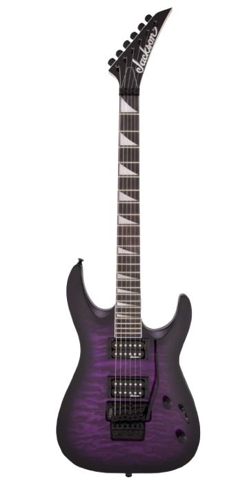
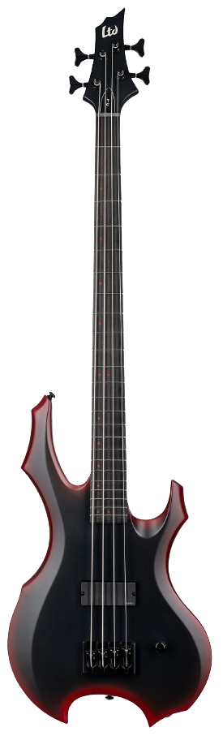
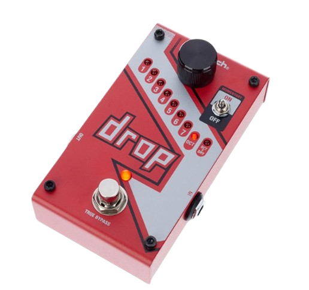

¿Qué es Drop Music?
Aquí encontrarás toda la información que necesitas sobre el mundo de las cuerdas y los efectos: desde la historia de los instrumentos más icónicos hasta guías técnicas, comparativas y curiosidades sobre modelos, marcas y músicos.
Explora nuestras secciones:
- 🎶 Guitarras: tipos, componentes, marcas legendarias y artistas que marcaron época.
- 🎵 Bajos: desde los clásicos de cuatro cuerdas hasta los modernos de seis, con fichas detalladas y consejos de mantenimiento.
- ⚙️ Pedales y efectos: descubre cómo cada pedal transforma el sonido y aprende a combinarlos para crear tu propio tono.
Nuestra misión es ofrecerte información clara, precisa y actualizada, tanto si eres principiante como si eres un músico experimentado. ¡Sumérgete en el universo de los instrumentos y amplía tus conocimientos un acorde a la vez! 🎶


